第一章 引论
什么是编译程序
- 翻译程序(Translator)：把某一种语言程序(称为源语言程序)等价地转换成另一种语言程序(称为目标语言程序)的程序
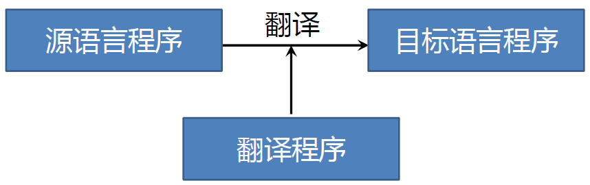
编译程序(Compiler)：把某一种高级语言程序等价地转换成另一种低级语言程序(如汇编语言或机器语言程序)的程序
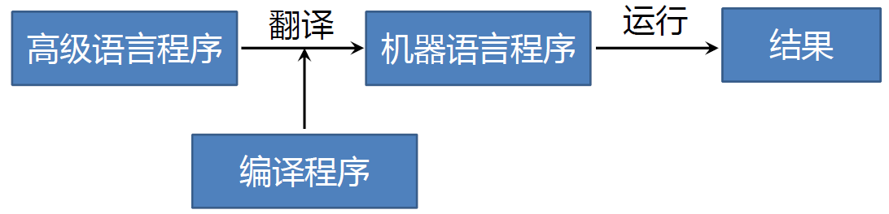
* 运行编译程序的计算机：宿主机 * 运行目标程序的计算机：目标机 * 根据用途和侧重，编译程序可分为： 诊断编译程序(Diagnostic Compiler) 优化编译程序(Optimizing Compiler) 交叉编译程序(Cross Compiler)：编译程序产生不同于其宿主机的目标代码 可变目标编译程序(Retargetable Compiler：不需要重写编译程序中与机器无关的部分。解释程序(Interpreter)：
- 把源语言写的源程序作为输入，但不产生目标程序，而是边解释边执行源程序
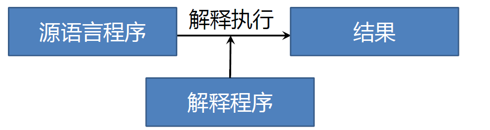
为什么要学习编译原理
理解计算系统，注意不是计算机系统。
设计计算系统
计算思维 Computational Thinking)
- 计算思维是运用计算机科学的基础概念去求解问题、
设计系统和理解人类的行为，它包括了一系列广泛
的计算机科学的思维方法 - 计算思维和阅读、写作和算术一样，是21世纪每个
人的基本技能，而不仅仅属于计算机科学家 - 包括
抽象
自动化
问题分解
递归
权衡
保护、冗余、容错、纠错和恢复
利用启发式推理来寻求解答
在不确定情况下的规划、学习和调度
- 计算思维是运用计算机科学的基础概念去求解问题、
编译过程
词法分析
输入源程序字符串，扫描哪些字符构成了标识符，哪些字符构成了常数
依循的原则：构词规则
描述工具：有限自动机
1
2for i := 1 to 100 do
基本字 标识符 赋值号 整常数 基本字 整常数 基本字
语法分析
- 在词法分析的基础上，根据语法规则把单词符号串分解成各类 语法单位(语法范畴)，如下图得到了一棵语法树。
- 依循的原则：语法规则
- 描述工具：上下文无关文法
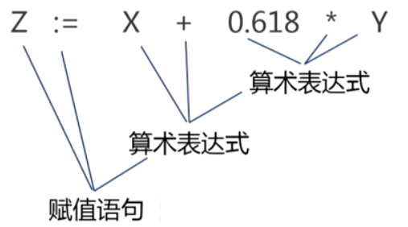
- 中间代码产生
- 对各类语法单位按语言的语义进行初步翻译
- 依循的原则：语义规则
- 描述工具：属性文法
- 中间代码：三元式、四元式，树，…
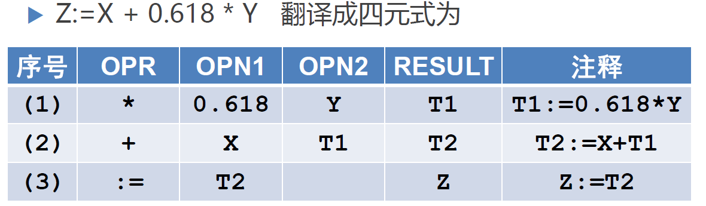
- 优化
- 对前阶段产生的中间代码进行加工变换，以期在最后阶段产生更高效的目标代码
- 依循的原则：程序的等价变换原则
- 比如下图的憨憨程序就可以被编译器优化的很优秀
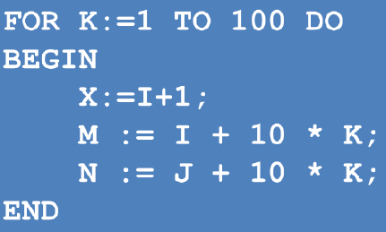
- 目标代码产生
- 把中间代码变换成特定机器上的目标代码
- 依赖于硬件系统结构和机器指令的含义
- 目标代码三种形式
- 汇编指令代码: 需要进行汇编
- 绝对指令代码: 可直接运行
- 可重新定位指令代码: 需要连接
编译程序的结构
- 编译程序总框
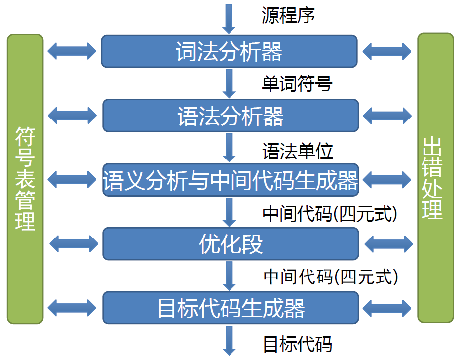
出错处理
- 发现源程序中的错误，把有关错误信息报告给用户
- 语法错误
- 源程序中不符合语法（或词法）规则的错误
- 非法字符、括号不匹配、缺少；、…
- 语义错误
- 源程序中不符合语义规则的错误
- 说明错误、作用域错误、类型不一致、…
遍 (pass)
所谓的 “遍”，就是对源程序或源程序的中间表示从头到尾扫描一遍
编译程序的五个阶段，当然可以实现为五“遍”，也就是每个阶段都接受上一阶段的输出，然后完成本阶段的变换，生成本阶段完整的输出，每个阶段的输出都是源程序的一个完整表示，如一个完整的单词序列、一个完整的语法分析树、一个完整的中间代码表示、甚至是目标代码表示 等等
阶段与遍是不同的概念
一遍可以由若干段组成
在实际工作中，从程序效率和软件设计的角度考虑，我们往往会把若干联系非常紧密的阶段，合成一遍处理，比如说我们通常把词法分析、语法分析、中间代码生成这三个阶段合成一遍处理。
把词法分析和中间代码产生实现为一些子程序，也就是词法分析子程序或者是语义子程序，这两类子程序由语法分析模块来驱动或者调用。
在这个过程中，语法分析起主导作用，在语法分析的驱动下，词法分析 语法分析和中间代码生成三个阶段穿插进行，当词法分析完成最后一个单词的识别的时候，整个分析树也就很快得到了，同时所有的语法单位的翻译也就完成了，三个阶段合成一遍完成
一个阶段也可以分若干遍来完成
有些情况下一个阶段也可以分若干遍来实现，优化就是这样的例子，通常来说优化这个阶段被分成了很多遍，比如说 可以先对中间代码扫描一遍识别程序的基本结构，再扫描一遍完成简单的优化，再扫描一遍完成循环的优化，有时循环优化还有可能分成很多遍
编译前端和后端
- 编译前端
- 与源语言有关，如词法分析，语法分析，语义分析与中间代码产生，与机器无关的优化
- 编译后端
- 与目标机有关，与目标机有关的优化，目标代码产生
- 带来的好处
- 程序逻辑结构清晰
- 优化更充分，有利于移植
- 编译前端
编译程序的生成
工具：
以汇编语言和机器语言为工具
- 优点: 可以针对具体的机器，充分发挥计算机的系统功能；生成的程序效率高
- 缺点: 程序难读、难写、易出错、难维护、生产的效率低
以高级程序设计语言为工具
程序易读、易理解、容易维护、生产的效率高
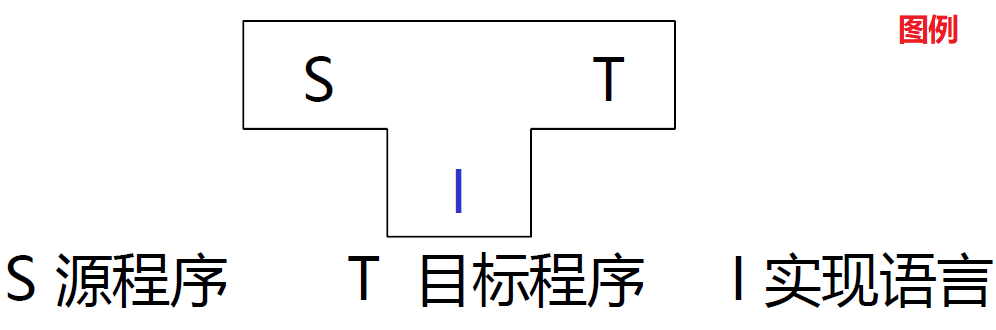
高级语言书写：
- 利用有的某种语言的编译程序实现另一种语言的编译程序
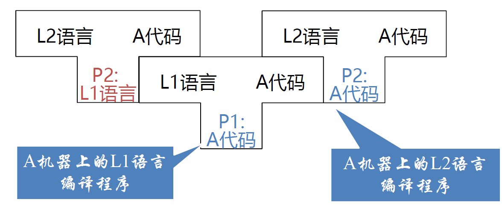
移植方法：
- 把一种机器上的编译程序移植到另一种机器上，跨机器
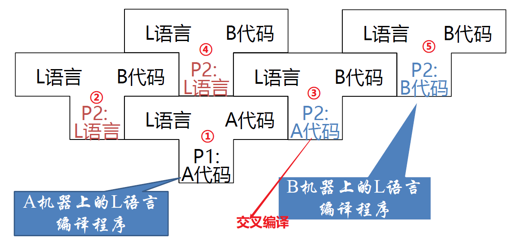
自编译方式
- 你通过低级语言实现 L 语言的一部分 L1，然后拿 L1 和低级语言去实现 L1+L2，然后拿 L1+L2 去实现 L1+L2+L3，依次类推。
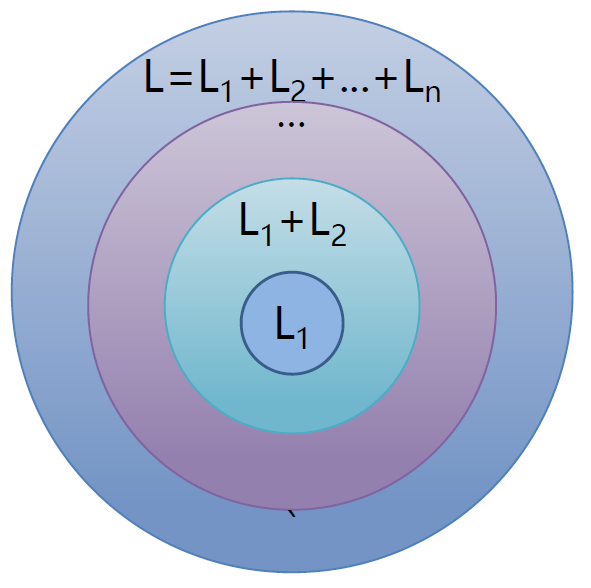
编译程序自动产生：
- 编译程序-编译程序，也叫编译程序产生器，也叫编译程序书写系统
- LEX：词法分析程序产生器
- YACC：语法分析程序产生器
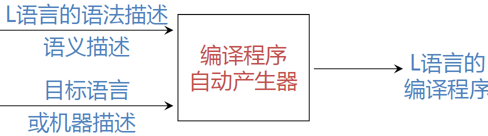
第二章 高级程序设计语言定义与语法描述
程序设计语言的定义
语法：
一组规则，用它可以形成和产生一个合式 (well-formed) 的程序
词法规则：单词符号的形成规则
- 单词符号是语言中具有独立意义的最基本结构
- 一般包括：常数、标识符、基本字、算符、界符等
- 描述工具：有限自动机
语法规则：语法单位的形成规则
- 语法单位通常包括：表达式、语句、分程序、过程、函数、程序等;
- 描述工具：上下文无关文法
$E\rightarrow i$：一个算术表达式可以由一个标识符构成；
$E\rightarrow E+E$：一个算术表达式可由两个算术表达式（也叫子表达式）通过 ‘+’ 号连接构成；
$E\rightarrow EE$：一个算术表达式可由两个算术表达式通过 ‘\‘（星号，而不特指乘号）号连接构成；
$E\rightarrow (E)$：一个算术表达式外加括号，还是算术表达式；
语法规则和词法规则定义了程序的形式结构
定义语法单位的意义属于语义问题
语义：
- 一组规则，用它可以定义一个程序的意义
- 描述方法
- 自然语言描述
- 二义性、隐藏错误和不完整性
- 形式描述
- 操作语义
- 指称语义
- 代数语义
- 自然语言描述
程序，本质上是描述一定数据的处理过程；
程序语言的基本功能：描述数据和对数据的运算；
程序的层次结构：
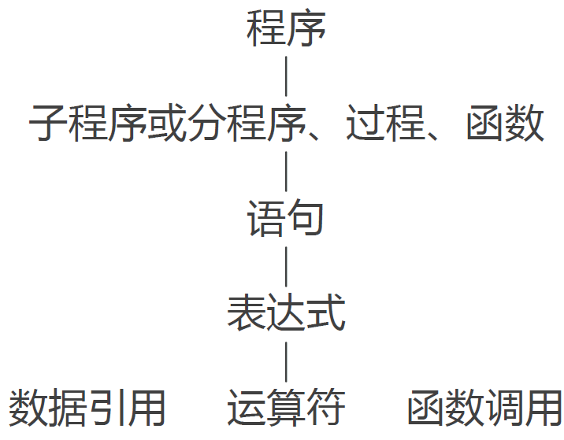
静态绑定：发生在程序编译过程中间的绑定，包括变量声明、类型定义、函数定义
动态绑定：发生在程序运行过程中间的绑定，包括 C++ 中的多态性虚函数
表达式：
- 表达式由运算量（也称操作数，即数据引用或函数调用）和算符（运算符，操作符）组成
- 形式：中缀、前缀、后缀
赋值语句
- A := B
- 名字的左值：该名字代表的存储单元的地址
- 名字的右值：该名字代表的存贮单元的内容
- C 语言中，
a+5只有右值没有左值，因为该值只能用在赋值号右边
程序设计语言的描述
上下文无关文法
文法：
- 描述语言的语法结构的形成规则
- 如
He gave me a book.这句自然语言的文法规则为：
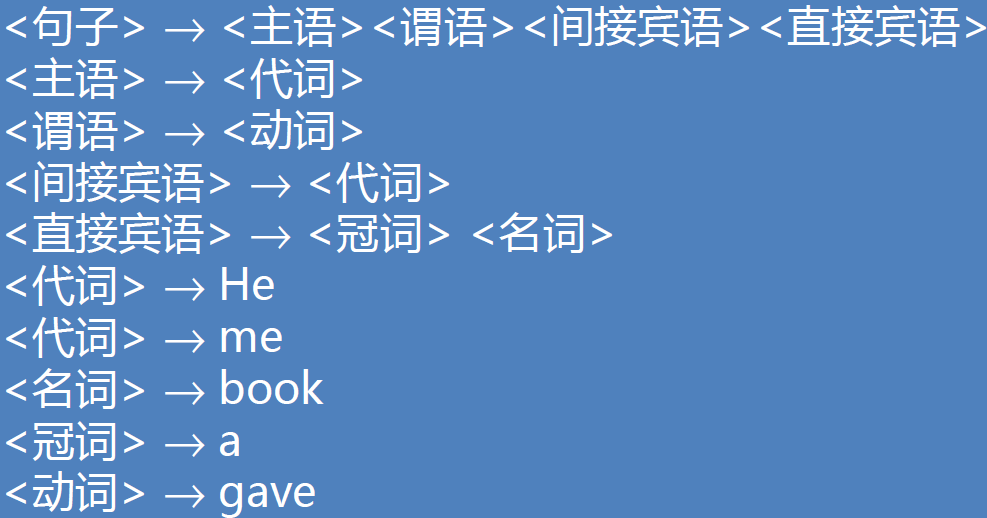
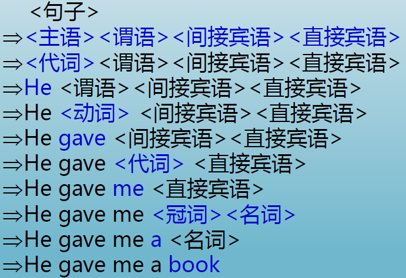
相关概念：
字母表：一个有穷字符集，记为 $\sum $
字母表中每个元素称为字符
$\sum$ 上的字（也叫字符串）是指由 $\sum$ 中的字符所构成的一个有穷序列
不包含任何字符的序列称为空字，记为 $\varepsilon $
用 $\sum^*$ 表示 $\sum$ 上的所有字的全体，包含空字 $ \varepsilon $
- 例如：设 $\sum = \{a, b\}$，则 $\sum^* = \{\varepsilon, a, b,aa,ab,ba,bb,aaa,\cdots \}$
$\sum^* $ 的子集 $U$ 和 $V$ 的连接（积）定义为 $UV = \{\alpha \beta \ | \ \alpha \in U \and \beta \in V\} $
- 例如：设 $U=\{a,aa\}, V=\{b,bb\}$，则 $UV =\{ab,abb,aab,aabb\}$，并且此时 $UV \not = VU $
$V$ 自身的 $n$ 次积记为 $V^n = \underbrace{V\cdots V}_{\text{n个}} $
$V^0=\{\varepsilon\}$
$V^* $ 是 $V$ 的闭包：$V^* = V^0 \cup V^1\cup V^2\cup V^3\cup \cdots $
$V^+ $ 是 $V$ 的正规闭包： $V^+ = V V^*$
- 正规闭包与闭包的区别：如果 V 中原来没有空字，那么闭包有空字，正规闭包没空字
- 例如：设 $U=\{a,aa\}$，那么 $U^* = \{\varepsilon ,a,aa,aaa,aaaa,\cdots \}, U^+ = \{a,aa,aaa,aaaa,\cdots \}$
上下文无关文法：
上下文无关文法 $ G$ 是一个四元组 $G=(V_T,V_N,S,P) $，其中
- $V_T$：终结符 (Terminal) 集合 (非空)
- 不能再分解的
- $V_N$：非终结符 (Noterminal) 集合(非空)，且$V_T ∩ V_N=∅$
- 能再分解，比如上图中的 “主语”、”谓语”
- 非终结符可由终结符和非终结符构成
- $S$：文法的开始符号，$S∈V_N$
- 是一个特殊的非终结符，它代表所定义的语言最终感兴趣的语法单位
- 比如英语中的 “句子”，编程中的 “程序”
- $P$：产生式集合(有限)，每个产生式形式为
- $P→α， P∈V_N， α ∈ (V_T ∪ V_N)^*$
- 上式读成 “P 定义为 α”，即左边的终结符 P，是被定义的句法单位，右边的 α 是构成这个句法单位的一种组合。
- $(V_T ∪ V_N)$ 代表终结符和非终结符组成的字符集合，再打上 * 做闭包，代表该集合中的符号组成的字的全体
- 开始符 $S$ 至少必须在某个产生式的左部出现一次
- 例如，定义只含 +, * 的算术表达式的文法：G=< {i, +, *, (, )}, {E}, E, P >，其中，P 由下列产生式组成：
- $E\rightarrow i$
- $E\rightarrow E+E$
- $E\rightarrow E*E$
- $E\rightarrow (E)$
- $V_T$：终结符 (Terminal) 集合 (非空)
巴科斯范式：”->” 用 “::=” 来表示
上下文无关文法
- 约定 $\begin{cases}P\rightarrow \alpha_1 \\ P\rightarrow \alpha_2\\\cdots \\ P\rightarrow \alpha_n\end{cases} \overset{缩写为}{\rightarrow} P\rightarrow \alpha_1 | \alpha_2 |\cdots |\alpha_n$
- 其中 “|” 读成 “或”，称 $\alpha_1$ 为 $P$ 的一个候选式
- 表示一个文法时，通常只给出开始符号和产生式
- 例如，定义只含 +, * 的算术表达式的文法可以缩写为：
$G(E) : E\rightarrow i \ |\ E+E \ | \ E*E\ |\ (E) $
文法与语言
推导：
定义：称 $\alpha A\beta$ 直接推出 $\alpha \gamma \beta$，即 $\alpha A\beta \Rightarrow \alpha \gamma \beta$ ，仅当 $A\rightarrow \gamma $ 是一个产生式，且 $\alpha, \beta \in (V_T\cup V_n)^*$
如果$α_1 \Rightarrow α_2 \Rightarrow … \Rightarrow α_n$，则我们称这个序列是从 $α_1$ 到 $α_n$ 的一个推导。若存在一个从 $α_1$ 到$α_n$ 的推导，则称 $α_1$ 可以推导出 $α_n $ 。
对文法 $G(E) : E\rightarrow i \ |\ E+E \ | \ E*E\ |\ (E) $，则 $E\Rightarrow (E)\Rightarrow (E+E)\Rightarrow (i+E)\Rightarrow (i+i)$
称 $\alpha_1 \overset{*}{\Rightarrow} \alpha_n$ 从 $\alpha_1$ ，经过 0 步或若干步推出 $\alpha_n$
称 $\alpha_1 \overset{+}{\Rightarrow} \alpha_n$ 从 $\alpha_1$ ，经过 1 步或若干步推出 $\alpha_n$
$\alpha_1 \overset{*}{\Rightarrow} \alpha_n$ 即 $\alpha=\beta$ 或 $ \alpha_1 \overset{+}{\Rightarrow} \alpha_n$
句型：
- 假定 G 是一个文法， S 是它的开始符号，如果 $S \overset{*}{\Rightarrow} \alpha_n$，则称 $\alpha$ 是一个句型
- $S \overset{*}{\Rightarrow} S$，所以 S 也是句型
句子：
- 仅含终结符号的句型是一个句子。
语言：
文法 G 所产生的句子的全体是一个语言，记为 $L(G)$
$L(G)= \{\alpha \ | \ S \overset{+}{\Rightarrow}\alpha, \alpha \in V_T^* \}$，即 $L(G)$ 是由 $\alpha$ 构成的集合， $\alpha$ 属于终结符的闭包，且能由 S 推导得来。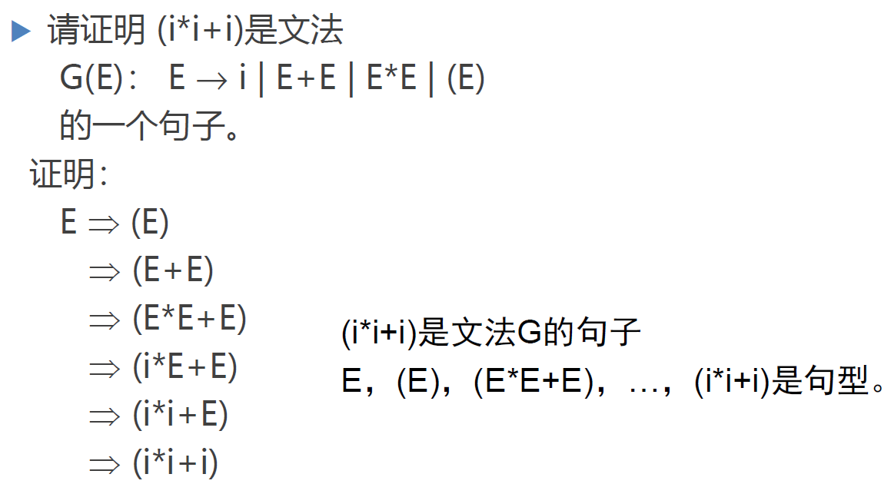
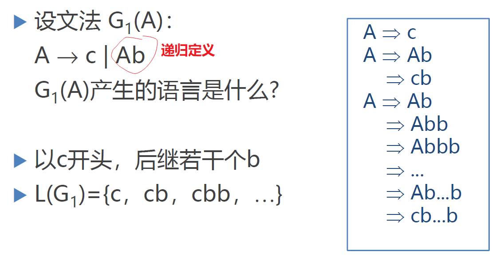
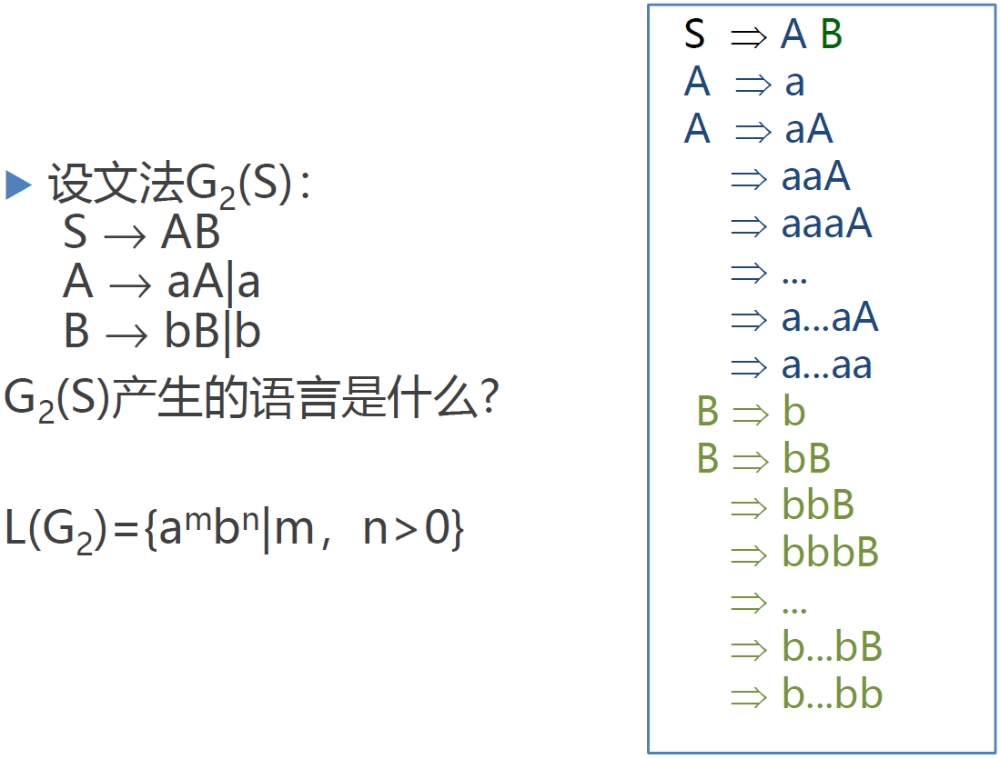
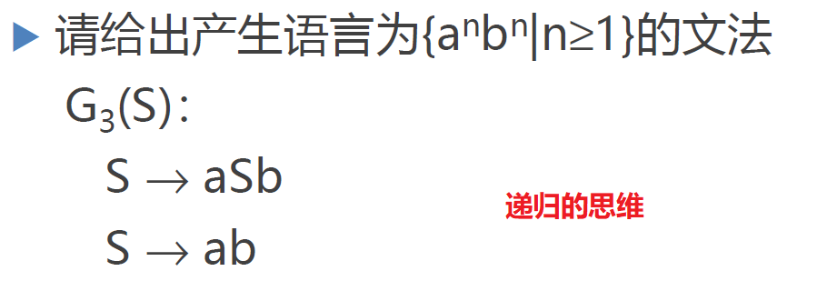
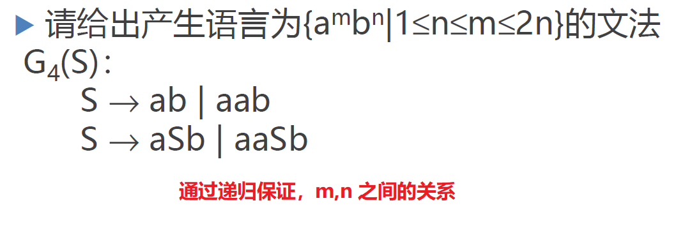
语法树与二义性
最左推导和最右推导：
从一个句型到另一个句型的推导往往不唯一
$E+E \Rightarrow i+E \Rightarrow i+i \\ E+E \Rightarrow E+i \Rightarrow i+i $最左推导：任何一步 $\alpha\Rightarrow \beta$ 都是对 $\alpha $ 中的最左非终结符进行替换
最右推导：任何一步 $\alpha\Rightarrow \beta$ 都是对 $\alpha$ 中的最右非终结符进行替换
语法树：
- 用一张图表示一个句型的推导，称为语法树
- 一棵语法树是不同推导过程的共性抽象
- 最左推导所对应的语法树的生长顺序是从上往下、从左往右
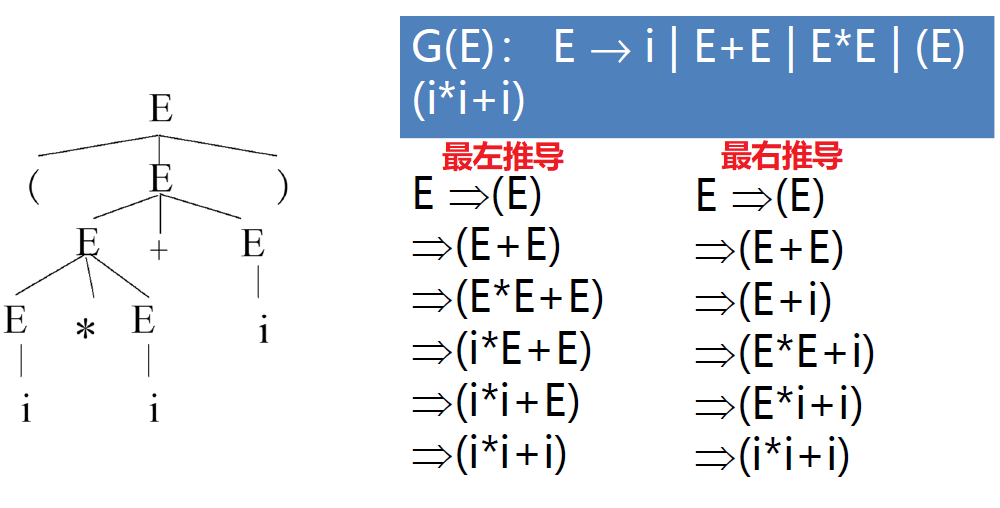
二义性 ambiguity：
文法的二义性：如果一个文法存在某个句子对应两棵不同的语法树，则说这个文法是二义的
G(E)： E → i|E+E|E*E|(E) 是二义文法，对于 $i*i +i$ 可以画出两棵语法树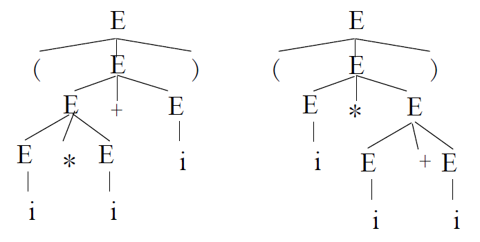
语言的二义性：一个语言是二义的，如果对它不存在无二义的文法
- 对于语言 L，可能存在 G 和 G’，使得 L(G)=L(G’)=L，有可能其中一个文法为二义的，
另一个为无二义的
- 对于语言 L，可能存在 G 和 G’，使得 L(G)=L(G’)=L，有可能其中一个文法为二义的，
自然语言的二义性举例
John saw Mary in a boat
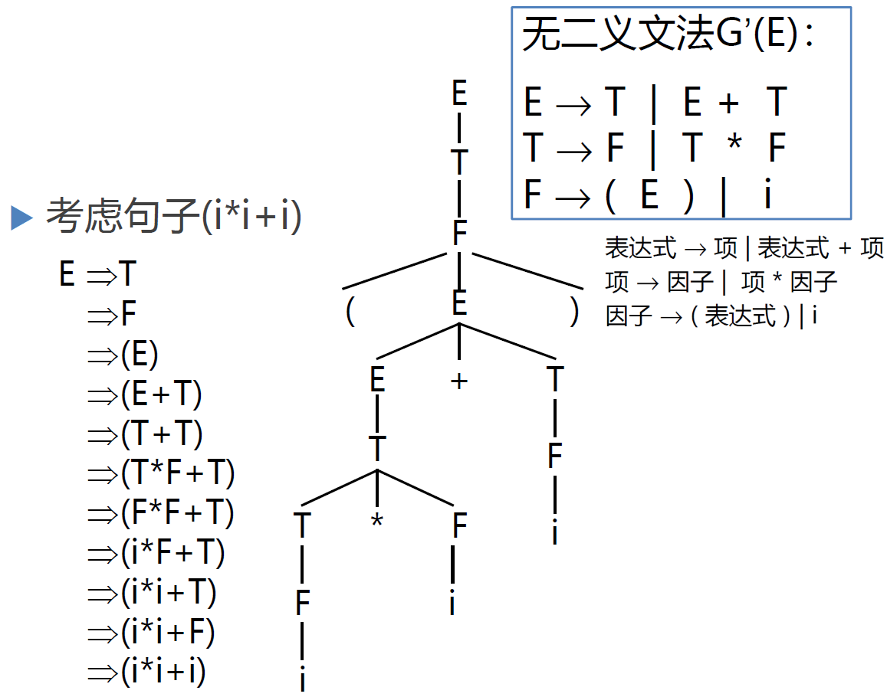
- 二义问题是不可判定问题，即不存在一个算法，它能在有限步骤内，确切地判定一个文法是否是二义的
- 可以找到一组无二义文法的充分条件
形式语言鸟瞰
- 乔姆斯基于1956年建立形式语言体系，他把文法分成四种类型：0，1，2，3型
- 与上下文无关文法一样，它们都由四部分组成，
但对产生式的限制有所不同
0 型（短语文法，图灵机）：
- 产生式形如：$\alpha \rightarrow \beta$
- 其中：$\alpha \in (V_T \cup V_N)^$ 且至少含有一个非终结符；$\beta \in(V_T\cup V_N)^$
- 乔姆斯基文法体系中，最通用，也是描述能力最强、最一般的文法，产生式的约束最弱
1 型（上下文有关文法，线性界限自动机）:
- 产生式形如：$\alpha \rightarrow \beta$
- 其中：$|\alpha| \le |\beta|$，仅 $S\rightarrow \varepsilon $ 例外
- 上下文有关文法非常复杂，等下会提到
2 型(上下文无关文法，非确定下推自动机)：
- 产生式形如： $A → β$
- 其中：$A∈ V_N$；$β∈ (V_T ∪ V_N)^*$
3 型 (正规文法，有限自动机)
产生式形如： $A → αB $ 或 $A → α $，终结符要么没有要么出现在右式最右边（右线性文法
其中： $α∈ V_T^$；$A，B∈V_N^$
产生式形如： $A → Bα$ 或 $A → α$ （左线性文法
其中： $α∈ V_T^*$；$A，B∈V_N$
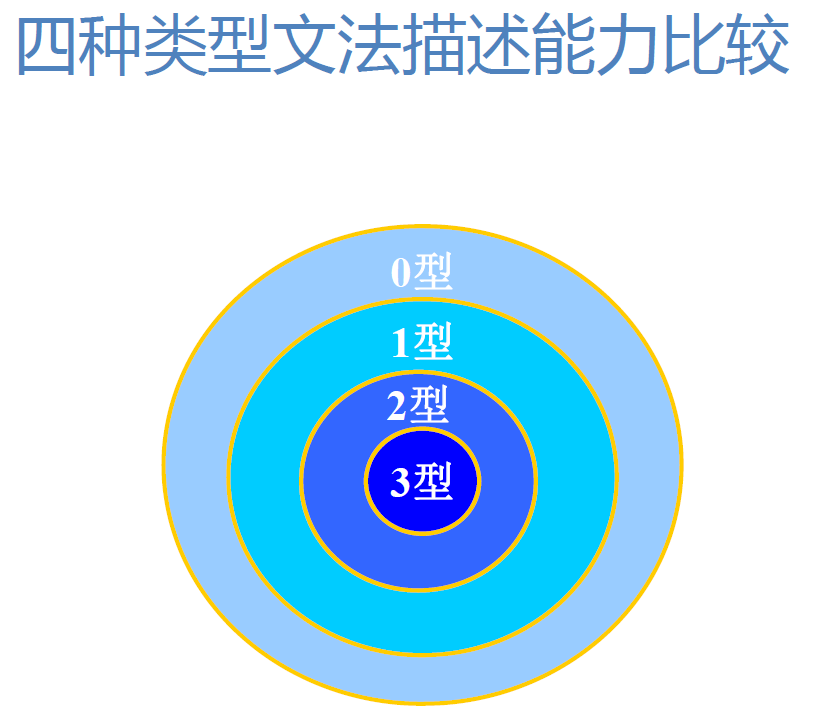
四种类型文法的描述能力：
$L_5=\{a^nb^n\ |\ n≥1\}$ 不能由正规文法产生，但可由上下文无关文法产生
$G_5(S): S\rightarrow aSb \ | \ ab$$L_6=\{a^nb^nc^n|n≥1\}$不能由上下文无关文法产生，但可由上下文有关文法产生
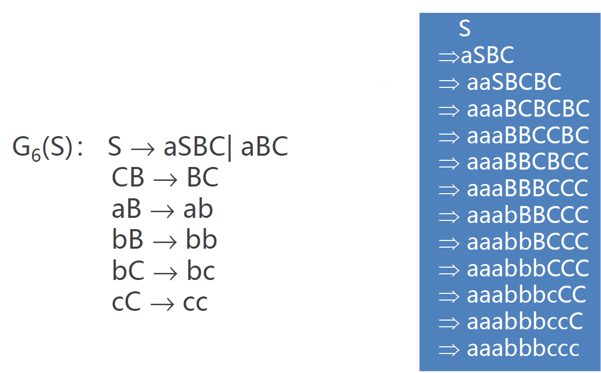
- 程序设计语言不是上下文无关语言，甚至不是上下文有关语言
- $L_7=\{αcα| α∈\{a,b\}^*\}$不能由上下文无关文法产生，甚至连上下文有关文法也不能产生，只能由0型文法产生
- 标识符引用。比如编程语言中要求使用的变量必须前面声明过
- 过程调用过程中，“形-实参数的对应性”(如个数，顺序和类型一致性)
- 对于现今程序设计语言，在编译程序中，仍然采用上下文无关文法来描述其语言结构 （上下文无关文法的成熟高效）
第三章 词法分析
词法分析器的设计
词法分析的任务：
- 从左至右逐个字符地对源程序进行扫描，产生一个个单词符号
词法分析器 (Lexical Analyzer)：
- 扫描器(Scanner)
- 执行词法分析的程序
- 功能：输入源程序、输出单词符号
单词符号的种类：
- 基本字：如begin，repeat，for，…
- 标识符：用来表示各种名字，如变量名、数组名和过程名
- 常数：各种类型的常数
- 运算符：+，-，*，/，…
- 界符：逗号、分号、括号和空白
词法分析器的输出：
输出的单词符号的表示形式：
<单词种别， 单词自身的值>单词种别通常用整数编码表示
- 若一个种别只有一个单词符号，则种别编码就代表该单词符号。假定基本字、运算符和界符都是一符一种。
- 若一个种别有多个单词符号，则对于每个单词符号，给出种别编码和自身的值。
- 标识符单列一种；标识符自身的值表示成按机器字节划分的内部码
- 常数按类型分种；常数的值则表示成标准的二进制形式
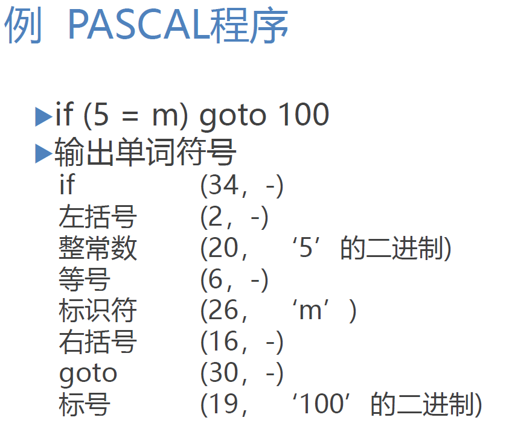
词法分析器作为一个独立子程序：
- 词法分析作为一个独立的阶段
- 结构简洁、清晰和条理化，有利于集中考虑词法分
析一些枝节问题
- 结构简洁、清晰和条理化，有利于集中考虑词法分
- 但不一定不作为单独的一遍
- 将其处理为一个子程序
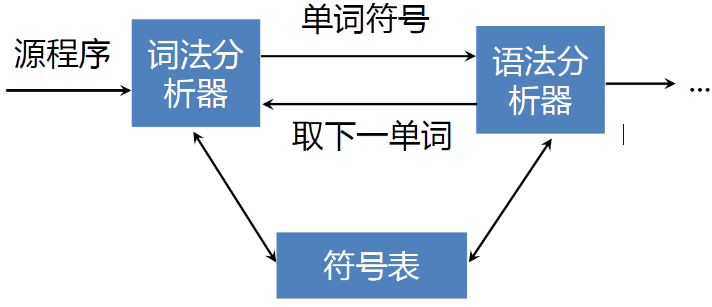
词法分析器的结构（分解的思想）：
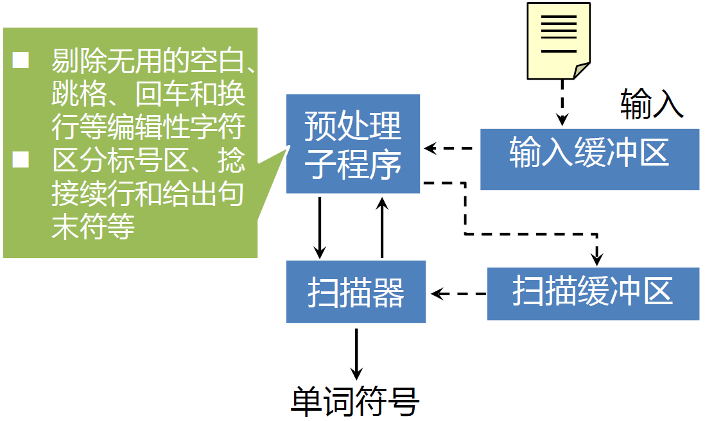
扫描缓冲区，分成两个半区互补使用，一个半区也即单词的最大长度
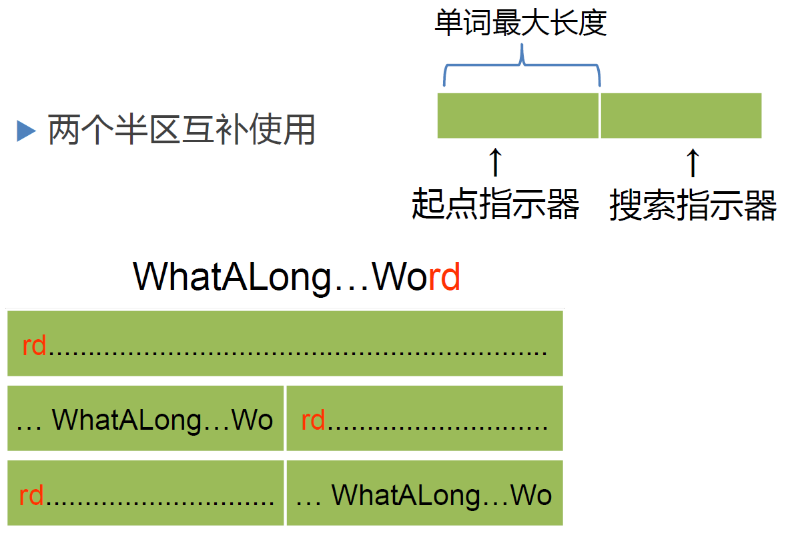
超前搜索：
- 有些语言（FORTRAN）允许基本字作为标识符，比如 IF 作为数组名
- 这给基本字的识别带来麻烦：
IF(5.EQ.M)GOTO5 // 条件判断+跳转
IF(5)=55 // 给数组赋值 - 这需要超前搜索来确定基本字
- 标识符识别、常数识别算符、界符的识别
- 超前搜索又涉及到回退，十分麻烦
现代高级语言的几点限制 —— 不必使用超前搜索：
- 所有基本字都是保留字;用户不能用它们作自己的标识符
- 基本字作为特殊的标识符来处理，使用保留字表
- 如果基本字、标识符和常数(或标号)之间没有确定的运算符或界符作间隔，则必须使用一个空白符作间隔
状态转换图：
状态转换图是一张有限方向图
- 结点代表状态，用圆圈表示
- 状态之间用箭弧连结，箭弧上的标记(字符)代表射出结状态下可能出现的输入字符或字符类
- 一张转换图只包含有限个状态，其中有一个为初态，至少要有一个终态
状态转换图可用于识别 (或接受) 一定的字符串
- 若存在一条从初态到某一终态的道路，且这条路上所有弧上的标记符连接成的字等于 α，则称α 被该状态转换图所识别(接受)
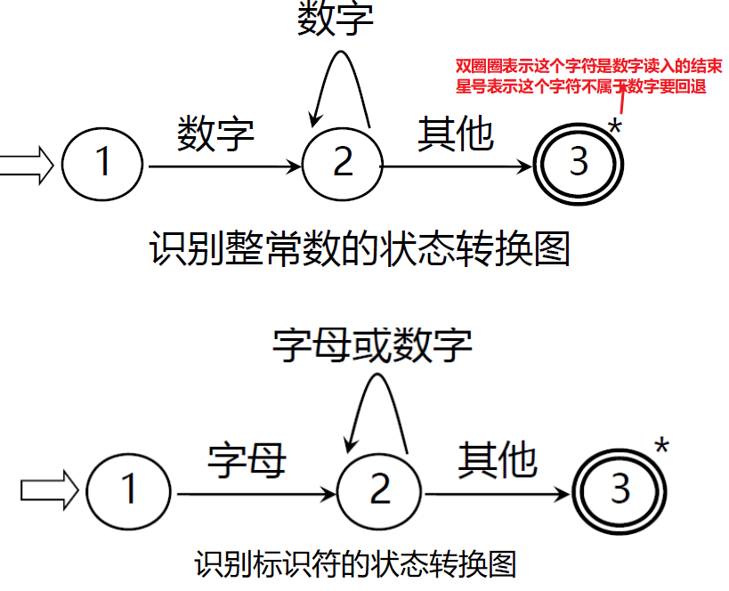
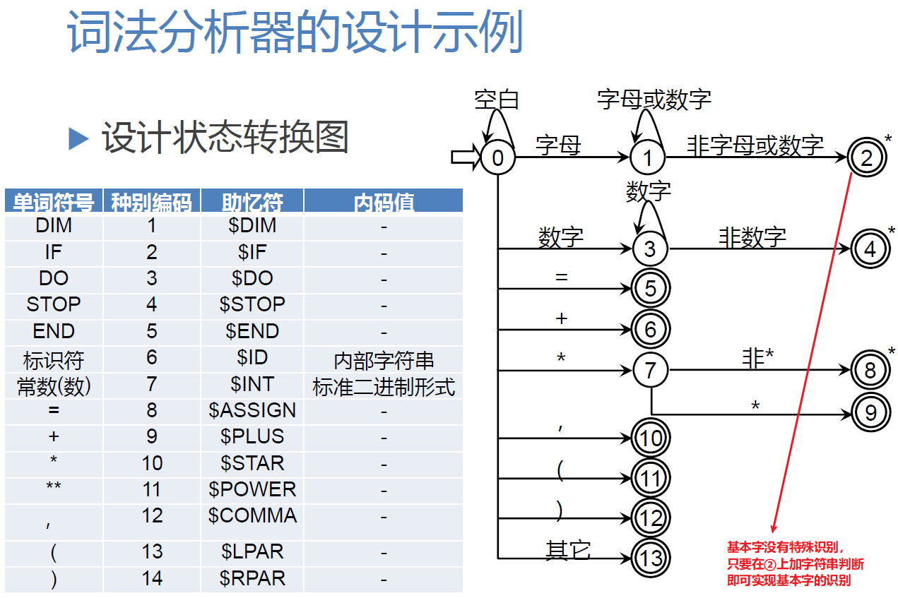
状态转换图的实现：
- 变量
curState用于保存现有的状态 - 用二维数组表示状态图：
stateTrans[state][ch]
1 | curState = 初态 |
正规表达式与有限自动机
正规式和正规集：
- 正规集可以用正规式表示（正规式是表示正规集的一种方法）
- 程序设计语言定义的合法的单词的集合都是正规集
- 一个字集合是正规集当且仅当它能用正规式表示
正规式和正规集的递归定义：
对于给定的字母表 $\sum$
- $\varepsilon $ 和 $\O $ 都是 $\sum$ 上的正规式，它们所表示的正规集为 $\{\varepsilon \}$ 和 $\O$
任何 a $\in \sum$ ，a 是 $\sum$ 上的正规式，它所表示的正规集为 {a}
假定 $e_1$ 和 $e_2$ 都是 $\sum$ 上的正规式，它们所表示的正规集为 $L(e_1)$ 和 $L(e_2)$ ，则
- $(e_1|e_2)$ 为正规式，它所表示的正规集为 $L(e_1)\cup L(e_2)$
- $(e_1·e_2)$ 为正规式，它所表示的正规集为 $L(e_1) L(e_2)$ （两个正规集的连接还是正规集）
- $(e_1)^$ 为正规式，它所表示的正规集为 $(L(e_1))^$ （一个正规集的闭包还是正规集）
仅由有限次使用上述三步骤而定义的表达式才是 Σ 上的正规式，仅由这些正规式表示的字集才是Σ上的正规集。
正规集的等价性：
- 若两个正规式所表示的正规集相同，则称这两个正规式等价。如 b(ab)*=(ba)*b
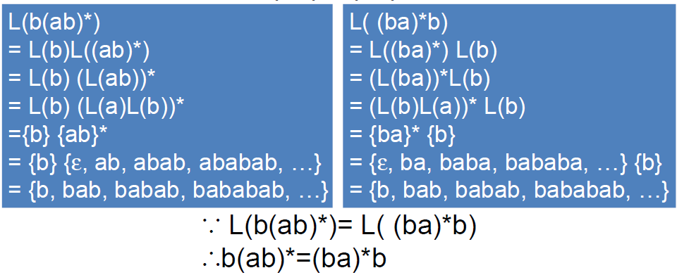
正规式的性质：
- e1|e2 = e2|e1 交换律
- e1 |(e2|e3) = (e1|e2)|e3 结合律
- e1(e2e3) = (e1e2)e3 结合律
- e1(e2|e3) = e1e2|e1e3 分配律
- (e2|e3)e1 = e2e1|e3 e1 分配律
- eε = εe = e e1e2 <> e2e1
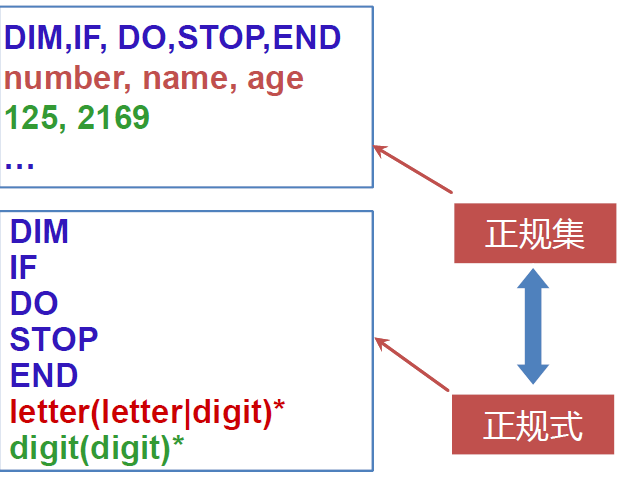
确定有限自动机
- 对状态图进行初始化定义 (描述)，得到
- 确定有限自动机 (Deterministic Finite Automata， DFA)
M 是一个五元式 $M=(S, \sum, f, S_0, F)$ 其中- S：有穷状态集
- $\sum$ ：输入字母表 (有穷)
- f ：状态转换函数，为 $S\times \sum \rightarrow S $ 的单值部分映射。
$f(s,a)=s’$ 表示当现行状态为 s，输入字符为 a 时，状态转移到 s’。 - $S_0 \in S$ 是唯一的一个初态
- $F\subseteq S$：终态集 (可空)
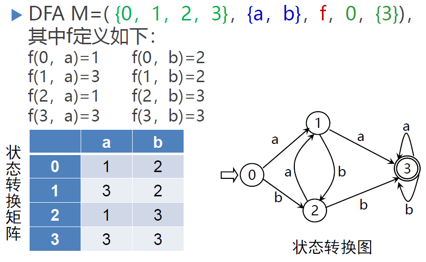
DFA表示为状态转换图
- 假定DFA M含有m个状态和n个输入字符
- 对应的状态转换图含有m个状态结点，每个结点顶多含有n条箭弧射出，且每条箭弧用Σ上的不同的输入字符来作标记
对于Σ*中的任何字α，若存在一条从初态到某一终态的道路，且这条路上所有弧上的标记符连接成的字等于α，则称α为DFA M所识别(接收)
DFA M所识别的字的全体记为L(M)
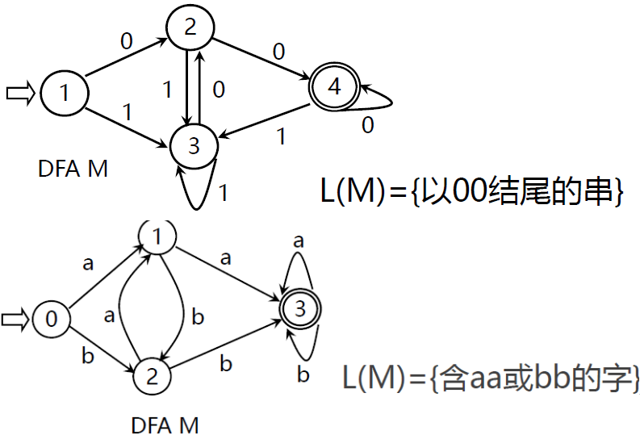
非确定有限自动机 （NFA）
- 定义：一个非确定有限自动机 (Nondeterministic Finite Automata, NFA) M
一个五元式 $M=(S, \sum, f, S_0, F)$ 其中- S：有穷状态集
- $\sum$ ：输入字母表 (有穷)
- f ：状态转换函数，为 $S\times \sum^* \rightarrow 2^S $ 的部分映射
$f(S, \alpha)=S’$，识别 $\alpha$ 后转移到 S’ 这个状态集合中的某个状态 - $S_0 \subseteq S$ 是非空的初态集
- $F\subseteq S$：终态集 (可空)